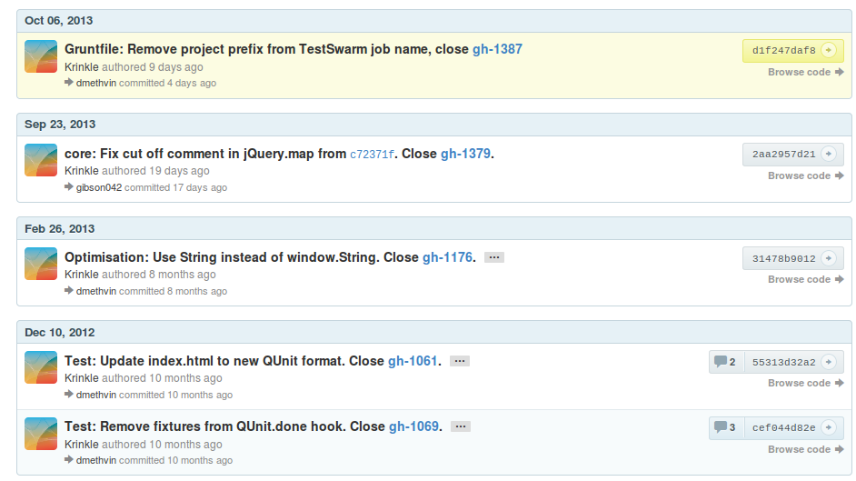

Trucos y Secretos


git status -sb
## branch name M modified.file D deleted.file A added.file ?? unstaged.file
Muestra una versión reducida de git status
git log --oneline
Despliega un commit por línea
git log --graph
Despliega el historial mostrando graficamente como estan conectados los commits
git log -1 HEAD
Muestra el último commit
git log --grep
Busca en el mensaje del commit
git log -S
Busca dentro del contenido del commit
git add -py efectuar este cambio n no efectuar este cambio q terminar; no efectuar este cambio ni los siguientes a efectuar este y los demaás cambios en este archivo d no efectuar este cambio ni ninguno de los siguientes en este archivo g ir a un cambio específico / buscar un cambio que concuerde con el regex dado j dejar esta cambio sin decidir, ver el siguiente cambio sin decidir J dejar esta cambio sin decidir, ver el siguiente cambio k dejar esta cambio sin decidir, ver el anterior cambio sin decidir K dejar esta cambio sin decidir, ver el anterior cambio s dividir este cambio en otros más pequeños e editar manualmente este cambio ? ayuda
git blame file
Muestra quién y cuándo se modificó cada línea de un archivo
git blame -C file
Incluye movimientos entre archivos
git blame file -L #l1,#l2
Cambios en un rango específico
git branch --merged
Muestra las ramas mezcladas.
git branch --no-merged
Muestra las ramas no mezcladas aún.
git branch -D name
Eliminar una rama.
git branch -r
Muestra las ramas remotas.
git push origin :name
git push origin --delete name
Eliminar una rama remota de nombre name.
git checkout -b name
Crea una rama y se posiciona en ella.
git checkout -
Regresa a la rama anterior.
git checkout $sha
Copio la versión del $sha seleccionado en el directorio de trabajo.
git checkout file
Revierto los cambios no guardados en el stage.
git revert -m 1 $sha
Crea un nuevo commit deshaciendo los cambios del commit con el $sha seleccionado.
git reset --hard $sha
Apunta HEAD al commit con el $sha seleccionado.
git diff --word-diff
Muestra diferencias palabra por palabra.
git diff commit..commit
Muestra diferencias entre dos commits arbitrarios.
git config --global help.autocorrect 1
Permite a git usar autocorregir comandos mal escritos.
git config --global alias.$name command
Crear alias para comandos de git.
git bisect
Permite encontrar commits que introdujeron bugs a traves de búsqueda binaria.


curl -i http://git.io -F "url=https://github.com/..."
Crea una url corta para cualquier url de github.

? es el mejor shorcut de todos.
git clone git://gist.github.com/6675768.git
cualquier gist de github puede ser clonado y manejado como un repositorio de git.
Github permite ver las diferencias entre dos imágenes, junto con las diferencias de código;
github por linea de comandos
Para MacOSbrew install hubOtros sistemas usando Ruby
git clone git://github.com/github/hub.git cd hub rake install
hub clone agar3s/hangout
hub fork agar3s/hangout
Permite linkear a una linea especifica de código en un archivo.

también acepta rangos.
ver solo los commits de un usuario.


 agar3s
agar3s